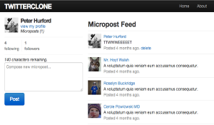
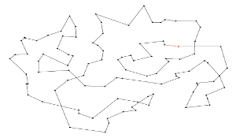
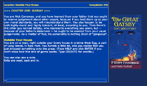
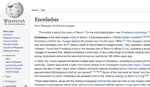

  <div class="wrap">
    <div id="main" class="clearfix">
      <div id="content" class="full grid">
        <div id="featuredPages" class="full homeSection clearfix">
          <div class="thumbs clearfix">
                  
          <div class="post-25 page type-page status-publish hentry small">  
            <a class="thumb" href="http://www.denisonconvention.com/" rel="bookmark" ></a>      
            <h2><a href="http://www.denisonconvention.com/" rel="bookmark" >Denison Convention</a></h2>     
            <p>A website made for our college's gaming convention, with front-end written in CSS and JavaScript and JQuery, making use of the Backstretch plugin.</p> 
          </div>
                  
          <div class="post-22 page type-page status-publish hentry small">  
            <a class="thumb" href="http://www.jobboard.im/" rel="bookmark" ></a>      
            <h2><a href="http://www.jobboard.im/" rel="bookmark" >Job Board</a></h2>      
            <p>I used Ruby on Rails to scrape websites of companies working in the global development sphere to automatically gather their job offers into one common place for interested people to reference.  Front-end in CSS and JavaScript.</p>
          </div>
                  
          <div class="post-19 page type-page status-publish hentry small">  
            <a class="thumb" href="https://twitterclonebeta.herokuapp.com/" rel="bookmark" ></a>      
            <h2><a href="https://twitterclonebeta.herokuapp.com/" rel="bookmark" >TwitterClone</a></h2>
            <p>A functional clone of Twitter written in Ruby on Rails.</p>
          </div>
        
        </div>


        <div class="thumbs clearfix">
                  
          <div class="post-25 page type-page status-publish hentry small">  
            <a class="thumb" href="https://github.com/peterhurford/travelling_salesman/tree/master" rel="bookmark" ></a>      
            <h2><a href="https://github.com/peterhurford/travelling_salesman/tree/master" rel="bookmark" >Travelling Salesman</a></h2>     
            <p>A Python genetic algorithm that uses greedy mutation to come up with very good approximations of routes for the Travelling Salesman problem.</p> 
          </div>
                  
          <div class="post-22 page type-page status-publish hentry small">  
            <a class="thumb" href="http://www.peterhurford.com/gatsby/" rel="bookmark" ></a>      
            <h2><a href="http://www.peterhurford.com/gatsby/" rel="bookmark" >The Great Gatsby Text Adventure</a></h2>      
            <p>A text adventure following the plot of F. Scott Fitzgerald's classic "The Great Gatsby".  Game engine written in JavaScript.</p>
          </div>
                  
          <div class="post-19 page type-page status-publish hentry small">  
            <a class="thumb" href="http://www.peterhurford.com/programming/wikipedia/" rel="bookmark" ></a>      
            <h2><a href="http://www.peterhurford.com/programming/wikipedia/" rel="bookmark" >Random Featured Wikipedia Article</a></h2>
            <p>Uses the PHP cURL library to fetch a random article from Wikipedia's list of featured articles.</p>
          </div>


        </div>
      </div>
    </div>
  </div>
</div>